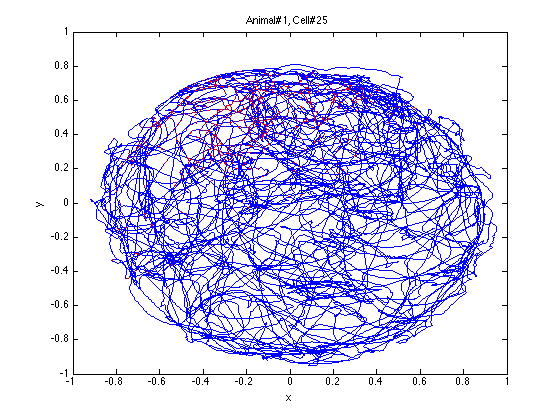
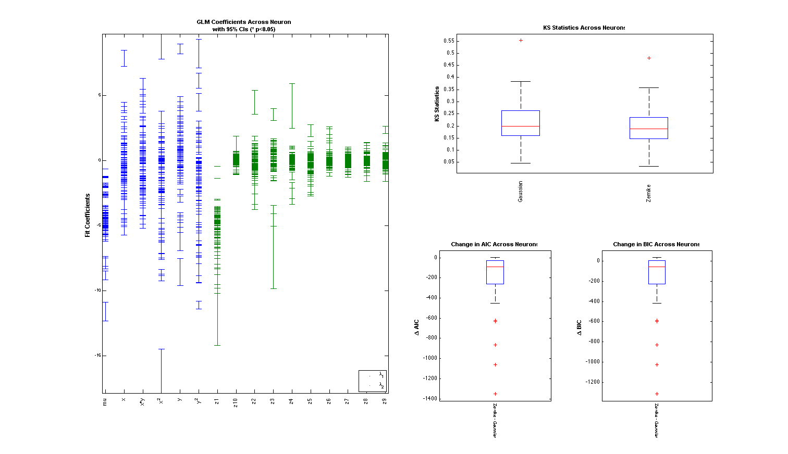
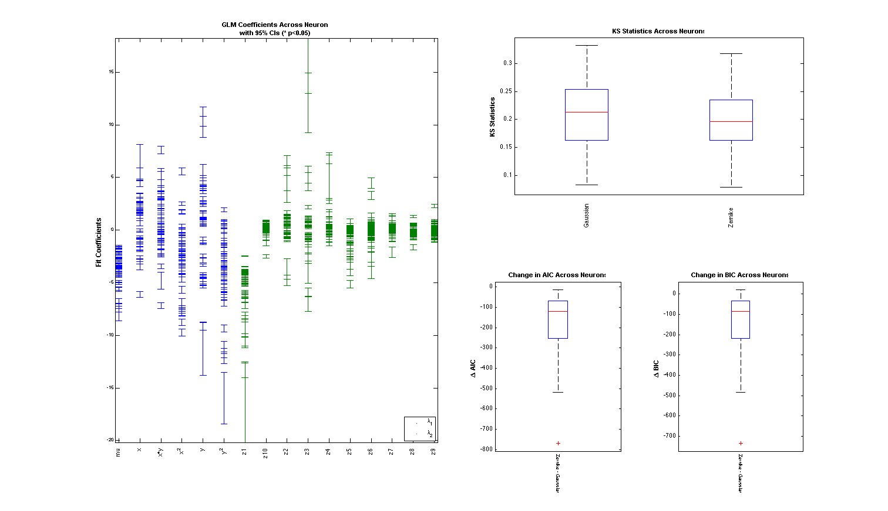
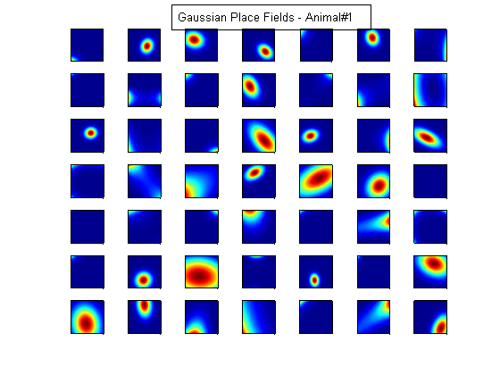
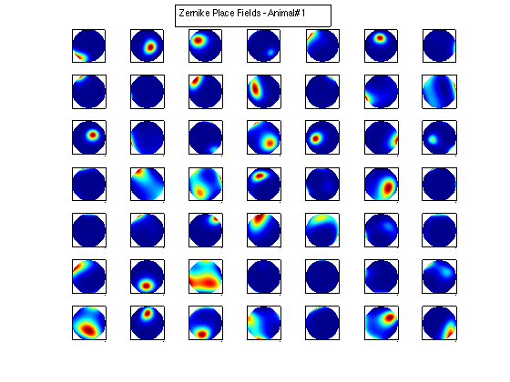
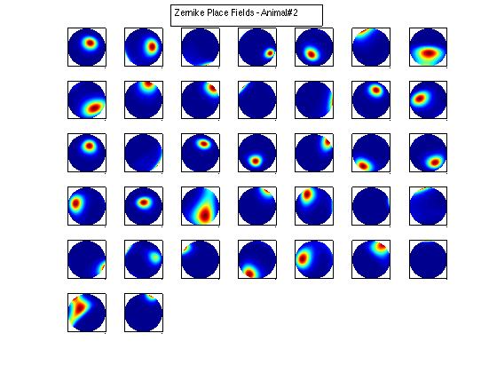
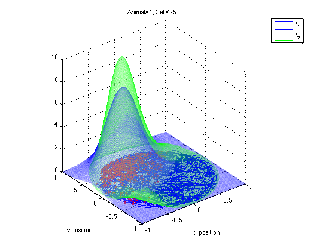
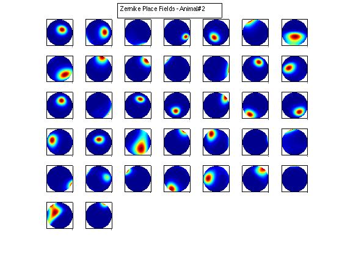
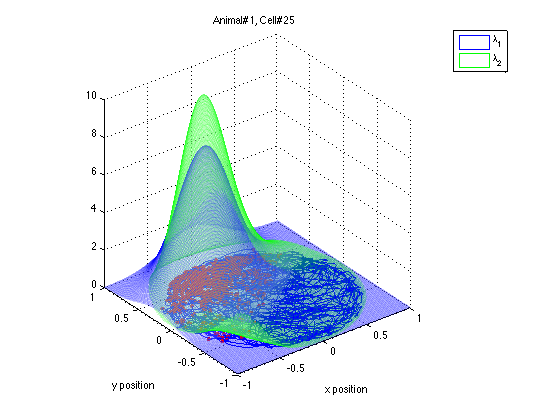

HIPPOCAMPAL PLACE CELL - RECEPTIVE FIELD ESTIMATION
Estimation of receptive fields of neurons is a very common data analysis problem in neuroscience. Here we use the nSTAT software to perform an estimation of the receptive fields of hippocampal place cells using a bivariate Gaussian model and Zernike polynomials. The number of zernike polynomials is based on "An Analysis of Hippocampal Spatio-Temporal Representations Using a Bayesian Algorithm for Neural Spike Train Decoding" Barbieri et. al 2005. The data used herein in was provided by Dr. Ricardo Barbieri on 2/28/2011.
Author: Iahn Cajigas
Date: 3/1/2011
Contents
close all
Example Data
The x and y coordinates of a freely foraging rat in a circular environment (70cm in diameter and 30cm high walls) and a fixed visual cue. The x and y coordinates at the time when a spike was observed are marked in red. The position coordinates have been normalized to be between -1 and 1 to allow to simplify the analysis.
load(strcat('PlaceCellDataAnimal1.mat')); exampleCell = 25; figure(1); plot(x,y,'b',neuron{exampleCell}.xN,neuron{exampleCell}.yN,'r.'); xlabel('x'); ylabel('y'); title(['Animal#1, Cell#' num2str(exampleCell)]);
Analyze All Cells
numAnimals =2; for n=1:numAnimals % load the data clear x y neuron time nst tc tcc z; load(strcat('PlaceCellDataAnimal',num2str(n),'.mat')); % Create the spikeTrains for each cell for i=1:length(neuron) nst{i} = nspikeTrain(neuron{i}.spikeTimes); end % Convert to polar coordinates [theta,r] = cart2pol(x,y); % Evaluate the Zernike Polynomials % Number of polynomials from "An Analysis of Hippocampal % Spatio-Temporal Representations Using a Bayesian Algorithm for Neural % Spike Train Decoding" Barbieri et. al 2005 cnt=0; for l=0:3 for m=-l:l if(~any(mod(l-m,2))) % otherwise the polynomial = 0 cnt = cnt+1; z(:,cnt) = zernfun(l,m,r,theta,'norm'); % zernfun by Paul Fricker % http://www.mathworks.com/matlabcentral/fileexchange/7687 end end end % Data sampled at 30 Hz but just to be sure delta=min(diff(time)); sampleRate = round(1/delta); % Define Covariates for the analysis baseline = Covariate(time,ones(length(x),1),'Baseline','time','s','',... {'mu'}); zernike = Covariate(time,z,'Zernike','time','s','m',{'z1','z2','z3',... 'z4','z5','z6','z7','z8','z9','z10'}); gaussian = Covariate(time,[x y x.^2 y.^2 x.*y],'Gaussian','time',... 's','m',{'x','y','x^2','y^2','x*y'}); covarColl = CovColl({baseline,gaussian,zernike}); % Create the trial structure spikeColl = nstColl(nst); trial = Trial(spikeColl,covarColl); % Define how we want to analyze the data tc{1} = TrialConfig({{'Baseline','mu'},{'Gaussian',... 'x','y','x^2','y^2','x*y'}},sampleRate,[]); tc{1}.setName('Gaussian'); tc{2} = TrialConfig({{'Zernike' 'z1','z2','z3','z4','z5','z6',... 'z7','z8','z9','z10'}},sampleRate,[]); tc{2}.setName('Zernike'); tcc = ConfigColl(tc); % Perform Analysis (Commented to since data already saved) % results =Analysis.RunAnalysisForAllNeurons(trial,tcc,0); % Save results % resStruct =FitResult.CellArrayToStructure(results); % filename = ['PlaceCellAnimal' num2str(n) 'Results']; % save(filename,'resStruct'); end
View Summary Statistics
Note the Zernike Polynomials yield better fits in terms of decreased KS Statistics (less deviation from the 45 degree line), reduced AIC and reduced BIC across the majority of cells and for both animals
for n=1:numAnimals resData=load(strcat('PlaceCellAnimal',num2str(n),'Results.mat')); results = FitResult.fromStructure(resData.resStruct); Summary = FitResSummary(results); Summary.plotSummary; end 
Visualize the results
% Define a grid [x_new,y_new]=meshgrid(-1:.01:1); %define new x and y y_new = flipud(y_new); x_new = fliplr(x_new); [theta_new,r_new] = cart2pol(x_new,y_new); %Data for the gaussian fit newData{1} =ones(size(x_new)); newData{2} =x_new; newData{3} =y_new; newData{4} =x_new.^2; newData{5} =y_new.^2; newData{6} =x_new.*y_new; % Zernike polynomials only defined on the unit disk idx = r_new<=1; zpoly = cell(1,10); cnt=0; for l=0:3 for m=-l:l if(~any(mod(l-m,2))) cnt = cnt+1; temp = nan(size(x_new)); temp(idx) = zernfun(l,m,r_new(idx),theta_new(idx),'norm'); zpoly{cnt} = temp; end end end for n=1:numAnimals clear lambdaGaussian lambdaZernike; load(strcat('PlaceCellDataAnimal',num2str(n),'.mat')); resData=load(strcat('PlaceCellAnimal',num2str(n),'Results.mat')); results = FitResult.fromStructure(resData.resStruct); for i=1:length(neuron) % Evaluate our fits using the new data and the estimated parameters lambdaGaussian{i} = results{i}.evalLambda(1,newData); lambdaZernike{i} = results{i}.evalLambda(2,zpoly); end % Plot the receptive fields for i=1:length(neuron) % 3d plot of an example place field % 2d plot of all the cell's fields if(n==1) h4=figure(4); if(i==1) annotation(h4,'textbox',... [0.343261904761904 0.928571428571418 ... 0.392857142857143 0.0595238095238095],... 'String',{['Gaussian Place Fields - Animal#' ... num2str(n)]},'FitBoxToText','on'); hold on; end subplot(7,7,i); elseif(n==2) h6=figure(6); if(i==1) annotation(h6,'textbox',... [0.343261904761904 0.928571428571418 ... 0.392857142857143 0.0595238095238095],... 'String',{['Gaussian Place Fields - Animal#' ... num2str(n)]},'FitBoxToText','on'); hold on; end subplot(6,7,i); end pcolor(x_new,y_new,lambdaGaussian{i}), shading interp axis square; set(gca,'xtick',[],'ytick',[]); if(n==1) h5=figure(5); if(i==1) annotation(h5,'textbox',... [0.343261904761904 0.928571428571418 ... 0.392857142857143 0.0595238095238095],... 'String',{['Zernike Place Fields - Animal#' ... num2str(n)]},'FitBoxToText','on'); hold on; end subplot(7,7,i); elseif(n==2) h7=figure(7); if(i==1) annotation(h7,'textbox',... [0.343261904761904 0.928571428571418 ... 0.392857142857143 0.0595238095238095],... 'String',{['Zernike Place Fields - Animal#' ... num2str(n)]},'FitBoxToText','on'); hold on; end subplot(6,7,i); end pcolor(x_new,y_new,lambdaZernike{i}), shading interp axis square; set(gca,'xtick',[],'ytick',[]); end end clear lambdaGaussian lambdaZernike; load(strcat('PlaceCellDataAnimal1.mat')); resData=load(strcat('PlaceCellAnimal1Results.mat')); results = FitResult.fromStructure(resData.resStruct); for i=1:length(neuron) % Evaluate our fits using the new data and the estimated parameters lambdaGaussian{i} = results{i}.evalLambda(1,newData); lambdaZernike{i} = results{i}.evalLambda(2,zpoly); end exampleCell = 25; figure(8); plot(x,y,'b',neuron{exampleCell}.xN,neuron{exampleCell}.yN,'r.'); xlabel('x'); ylabel('y'); title(['Animal#1, Cell#' num2str(exampleCell)]); figure(9); h_mesh = mesh(x_new,y_new,lambdaGaussian{exampleCell},'AlphaData',0); get(h_mesh,'AlphaData'); set(h_mesh,'FaceAlpha',0.2,'EdgeAlpha',0.2,'EdgeColor','b'); hold on; h_mesh = mesh(x_new,y_new,lambdaZernike{exampleCell},'AlphaData',0); get(h_mesh,'AlphaData'); set(h_mesh,'FaceAlpha',0.2,'EdgeAlpha',0.2,'EdgeColor','g'); legend(results{exampleCell}.lambda.dataLabels); plot(x,y,neuron{exampleCell}.xN,neuron{exampleCell}.yN,'r.'); axis tight square; xlabel('x position'); ylabel('y position'); title(['Animal#1, Cell#' num2str(exampleCell)]); 
  
 